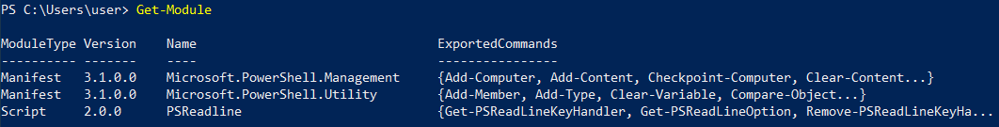

Get-Module
Get-Module ◇ List imported modules
To obtain a list of all currently imported modules, we can use the “Get-Module” cmdlet alone
In the example below, we can see all of the currently imported modules for the current PowerShell session.
 ◇ list of modules that we can import
PS> Get-Module -ListAvailable